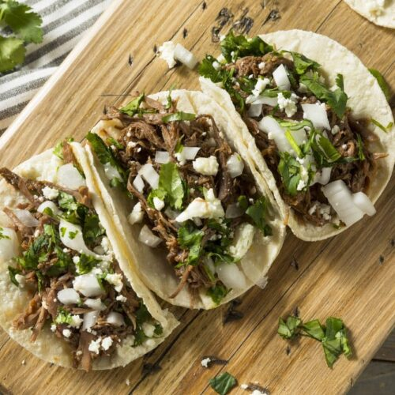

Tacos

Making Tacos
How to make authentic tacos
Ingredients
- Meat of choice Steak, Chicken, or Pork.
- Corn tortillas
- Onions
- Oregano
Steps
- Cook you meat of choice.
- Dice the meat into small chunks.
- Heat tortillas to appropriate temperature.
- Dice oregano and onions into chunks.
- Add the choice of meat onto the tortilla, then add the oregano and onions.